计算机组成原理第4章：存储器
1 存储器概述
存储器是计算机系统中的记忆设备，用来存放程序和数据，计算机系统的运行速度在很大程度上受存储器制约。I/O与存储器直接数据交换大大提高系统性能。
1.1 存储器的分类
1.1.1 按存储介质分类
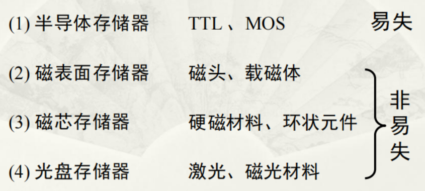
1.1.2 按存取方式分类
分为随机存储器、只读存储器、顺序存取存储器和直接存取存储器。
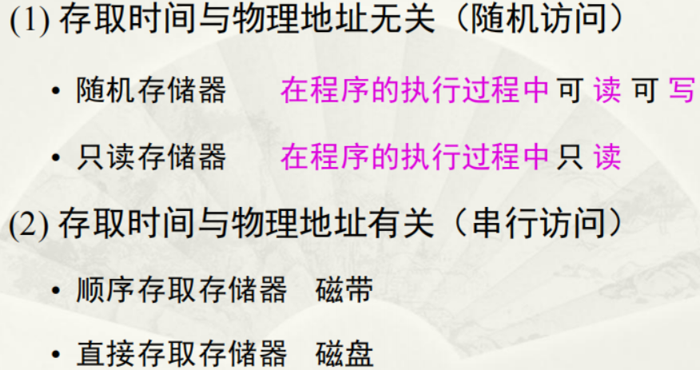
1.1.3 按在计算机中的作用分类
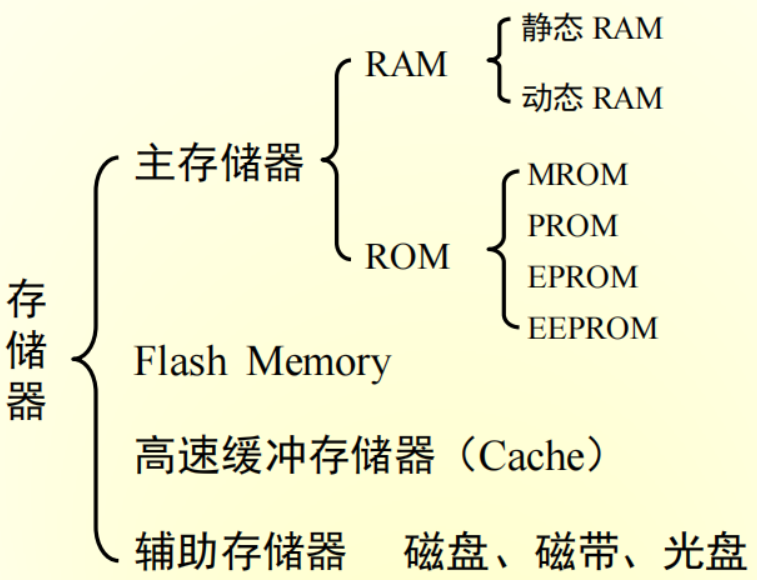
1.2 存储器的层次结构
存储器有3个主要性能指标：速度、容量和位价。
存储器三个主要特性的关系：
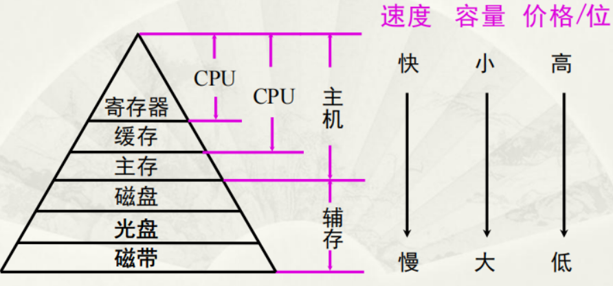
存储系统层次结构主要体现在缓存—主存和主存—辅存2个存储层次上。
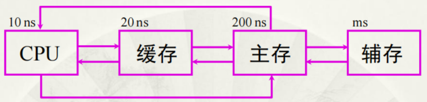
缓存—主存层次主要解决CPU与主存速度不匹配的问题，主存—辅存层次主要解决存储系统的容量问题。辅存的速度比主存的速度低，而且不能和CPU直接交换信息，但是容量比主存大得多，可以存放大量暂时未用到的信息，当CPU需要用到这些信息时，再将辅存的内容调入主存，供CPU直接访问。
在主存—辅存这一层次的不断发展中，逐渐形成了虚拟存储系统。
2 主存储器
2.1 概述
主存储器的基本组成如下：
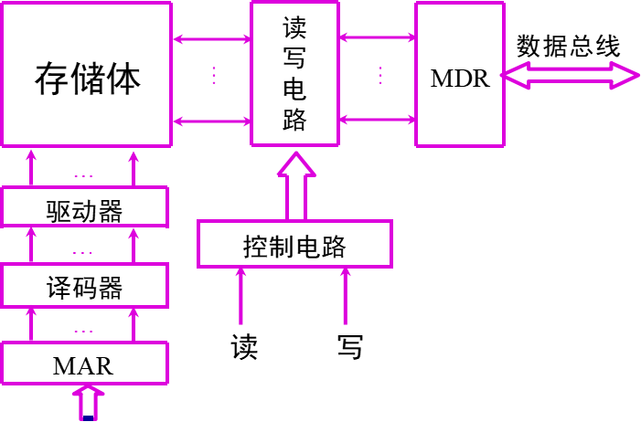
主存和CPU之间的联系：
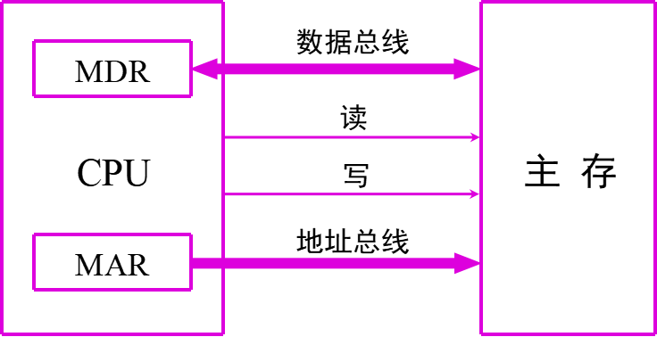
2.1.1 主存的技术指标
2.1.1.1 存储容量
存储容量：主存存放二进制代码的总位数
2.1.1.2 存储速度
存储速度是由存储时间和存储周期来表示的。
- 存储时间：启动一次存储器操作到完成该操作所需的全部时间
- 存取周期：进行连续两次独立的存储器操作（读或写）所需的最小间隔时间
2.1.1.3 存储器带宽
单位时间内存储器存取的信息量，单位为位/秒。
2.2 随机存取存储器
2.2.1 静态RAM
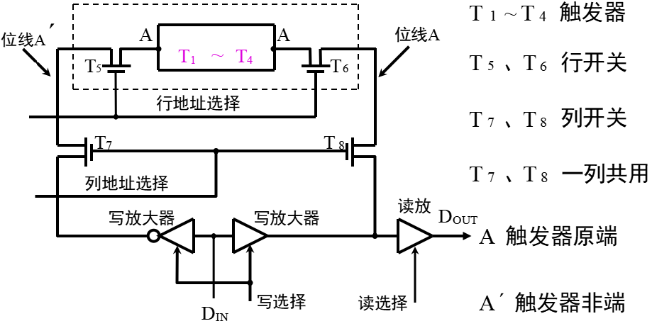
静态RAM的工作原理是用触发器存储信息的，不需要再生，但是掉电后原存信息丢失。
2.2.2 动态RAM
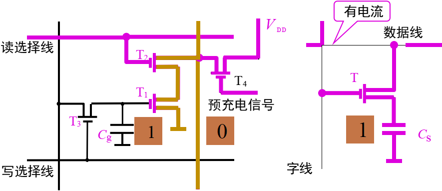
常见的动态RAM基本单元电路有三管式和单管式两种，共同特点都是靠电容存储电荷的原理来存储信息。
必须在2ms内对其所有存储单元恢复一次原状态，这个过程称为再生或刷新。
2.2.3 动态RAM的刷新
刷新的过程实质上是先将原存信息读出，再由刷新放大器形成原信息并重新写入的再生过程。刷新周期一般为2ms，又称再生周期。
通常有3种刷新方式：集中刷新、分散刷新和异步刷新。
2.2.3.1 集中刷新
集中刷新是指在规定的一个刷新周期内，对全部存储单元集中一段时间逐行进行刷新，此时须停止读/写操作。
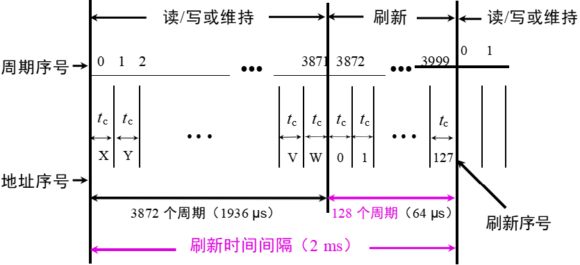
- 死区：
- 死时间率：
2.2.3.2 分散刷新
分散刷新是指对每行存储单元的刷新分散到每个存取周期内完成。
- 没有死区
2.2.3.3 异步刷新
异步刷新是前两种方式的结合，它既可以缩短“死时间”，又充分利用最大刷新间隔为2ms的特点。
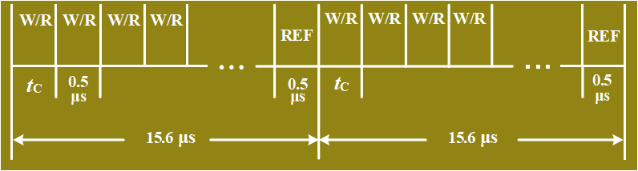
每隔（）刷新一次。将刷新安排在指令译码阶段，不会出现 “死区”。
2.2.4 动态 RAM 和静态 RAM 的比较
| DRAM | SRAM | |
|---|---|---|
| 存储原理 | 电容 | 触发器 |
| 集成度 | 高 | 低 |
| 芯片引脚 | 少 | 多 |
| 功耗 | 小 | 大 |
| 价格 | 低 | 高 |
| 速度 | 慢 | 快 |
| 刷新 | 需要 | 不需要 |
2.3 只读存储器
2.3.1 掩模 ROM ( MROM)
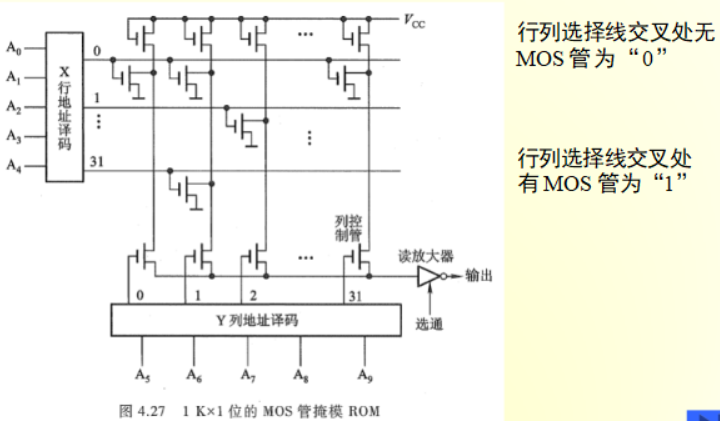
2.3.2 PROM (一次性编程)
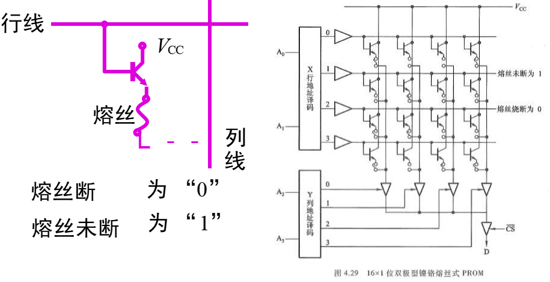
2.3.3 EPROM(多次性编程)
EPROM是一种可擦除可编程只读存储器。
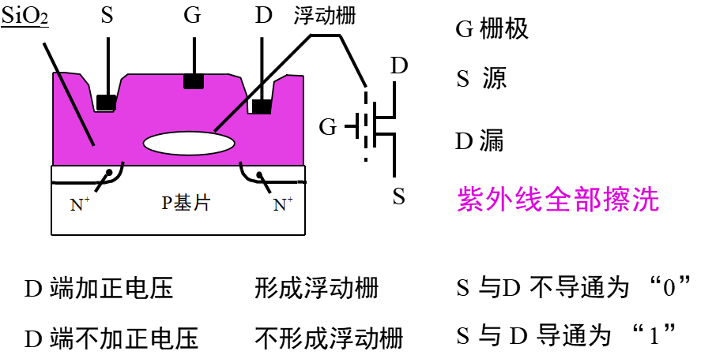
2.3.4 EEPROM（多次性编程）
- 电可擦写
- 局部擦写
- 全部擦写
2.3.5 Flash Memory (闪速型存储器)
存储器访问周期短，功耗低以及与计算机接口简单等优点。
2.4 存储器与CPU的连接
2.4.1 存储容量的扩展
位扩展：增加存储字长，例如用2片1K×4位 存储芯片组成 1K×8位 的存储器。
字扩展：增加存储字的数量，例如用2片1K×8位 存储芯片组成2K×8位 的存储器。
字位扩展：既增加存储字的数量，又增加存储字长，例如用8片1K ×4位 存储芯片组成4K× 8位 的存储器**。**
2.4.2 存储器与CPU的连接
- 地址线的连接：CPU的地址线往往比存储芯片的地址线要多，通常将CPU地址线的低位与存储芯片的地址线相连
- 数据线的连接：应使CPU的数据线与存储芯片的数据线位数相等
- 读/写命令线的连接：CPU读/写命令线一般与存储芯片的读/写控制端相连，通常高电平为读，低电平为写
- 片选线的连接：片选有效信号与CPU的访存信号（低电平）有效
一般步骤：
- 写出对应的二进制地址码
- 确定芯片的数量及类型
- 分配地址线
- 确定片选信号
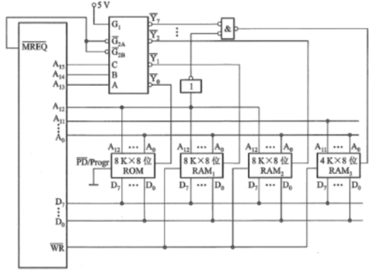
2.5 存储器的校验
任意两组合法代码之间二进制位数的最少差异称为编码的最小距离，编码的纠错 、检错能力与编码的最小距离有关。
- L：编码的最小距离
- D：检测错误的位数
- C：纠正错误的位数
 微信
微信 支付宝
支付宝